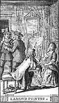

1667
• MOLI�RE
5 janvier : Premi�re de la Pastorale comique � Saint-Germain, dans le Ballet des Muses.
14 f�vrier : Premi�re du Sicilien ou l'Amour peintre.
4 mars : Premi�re d'Attila, de Corneille, au Palais-Royal.
29 mars : Cl�ture de P�ques. La Du Parc quitte la troupe pour l'H�tel de Bourgogne.
Avril : Des interruptions r�p�t�es, dues sans doute � la maladie de Moli�re.
5 ao�t : Premi�re et seule repr�sentation de L'Imposteur, pi�ce imm�diatement interdite.
• VIE TH��TRALE ET LITT�RAIRE
Racine, Andromaque
• POLITIQUE ET SOCI�T�
Guerre de D�volution contre l'Espagne; la France envahit la Flandre.
Trait� de Br�da.
